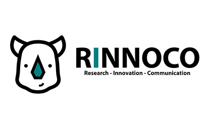
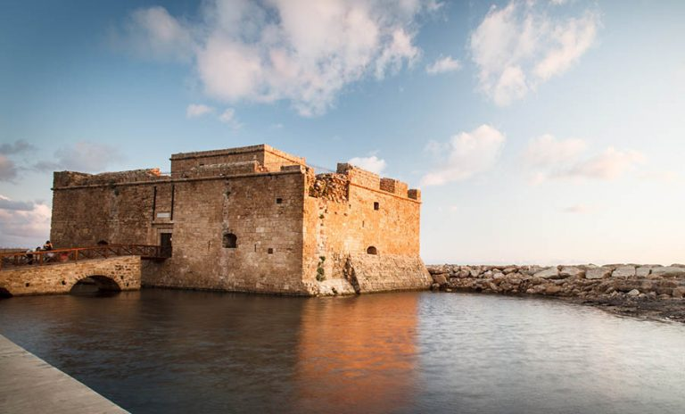
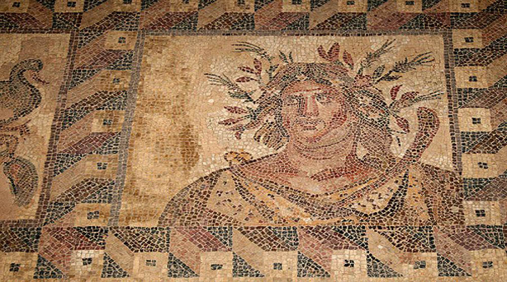

Welcome to FSK39, Paphos
It is our pleasure to welcome you to the webpages of the XXXIX (39th) Panhellenic
Conference on Solid State Physics & Materials Science. This year’s rotational
established annual event takes place at the historical city of Paphos, Cyprus, from
September 14 to 17, 2025. It is organized by the Cyprus University of Technology
together with colleagues from the
The Cyprus Institute
, the
University of Cyprus
and the
photonics-based SME
Lumoscribe
.
The conference continues the successful tradition of the previous meetings, bringing
together international scholars and industry professionals with researchers from Greece
and Cyprus, and giving emphasis to the interaction of young researchers with
distinguished specialists. It covers a wide spectrum of topics in the fields of
Condensed Matter and Materials Science, with contributions from Physics, Chemistry,
Biology, and Engineering, both theoretical/computational and experimental.
The Organizing Committee has the honor to invite you to participate in the
conference,
presenting recent, interesting results of your research. We are committed to delivering
a conference organization that meets and exceeds your expectations, provides a forum for
fruitful discussions and exchange of ideas, and we look forward to your massive and
active participation. Within these webpages, you can find detailed information about the
event. For any inquiries, do not hesitate to contact us at fsk2025@cut.ac.cy.
The conference venue halls are at the “Markideion” and “Attikon” municipal theaters
of
Paphos, located in the city center. We are grateful to the municipality of Paphos and
the Mayor Mr. Faidon Faidonos for their generous offering of these two modern theaters
as venue halls. Their central location offers the possibility for various activities
around the city center as well as at the old historical coastal area.
Paphos, with its modern look and its extraordinary historical past, as evident by
its
many historical sites, is expecting you and will definitely make your stay exciting and
enjoyable. We encourage you to make your air-ticket and hotel reservations in time
because September is at the peak of the tourist season in Cyprus. We expect you all in
September at Paphos.
On behalf of the Organizing Committee,
Panos Keivanidis
Pantelis Kelires

Medieval Castle of Pafos
The House of Dionysos